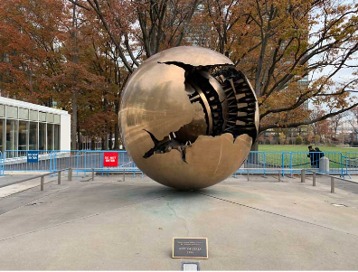

Não encontrada
Obra 1
Sphere Within Sphere
Arnaldo Pomodoro
Uma esfera dourada dentro de outra esfera, com uma fissura que revela engrenagens e mecanismos internos. Doada pela Itália, a obra é um dos ícones mais fotografados da ONU. Simboliza a fragilidade da ordem mundial — por fora, o globo parece perfeito; por dentro, tensões e conflitos o fragmentam. Para o tema de Juventude e Desarmamento, a escultura convida os jovens a enxergar além das aparências e agir para reparar as fissuras do mundo.